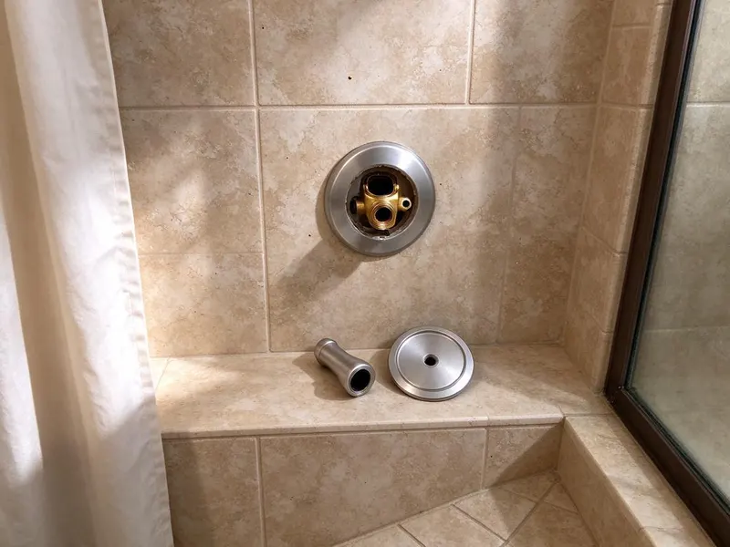

Toilet Replacement in Baytown, TX
If your toilet is beyond repair, DFJ Plumbing is here to help residents of Baytown, TX with reliable toilet replacement.
- Fast Service
- Licensed Plumbers
- Clear Pricing
- Guaranteed Work

Expert Toilet Replacement in Baytown, TX.
Contact DFJ Plumbing today for a free estimate and professional service.
Professional Toilet Replacement Services in Baytown, TX
DFJ Plumbing specializes in efficient and dependable toilet replacement for homes across Baytown, TX. Whether your old toilet is constantly running, cracked, or simply outdated, our skilled plumbers can remove it and install a brand new unit.
Our expertise includes:
- Efficient removal of old toilet units.
- Precise installation of all toilet types.
- Code-compliant plumbing connections.

Additional Bathroom Plumbing Services in Baytown, TX
From toilets to showers, our bathroom plumbing team in Baytown, TX handles repairs, installs, and upgrades with tidy, code-compliant work.


Customers
Why Choose DFJ Plumbing for Toilet Replacement in Baytown, TX?
Choosing DFJ Plumbing for your toilet replacement means you are getting a team that prioritizes quality and efficiency. We ensure every new toilet is installed correctly to prevent future leaks or issues.
- Expert Plumbers, Our licensed plumbers have extensive experience specifically with toilet plumbing, from flange repairs to wax ring seals.
- Quality Fixtures, We recommend and install durable, water-saving toilet models suited for Texas homes and water pressure.
- Clean Work, Our team ensures a clean work area, protecting your bathroom floors and leaving no mess behind after the replacement.
Citywide Coverage
No matter where you are located in Baytown, TX, our expert team is ready to provide timely and efficient toilet replacement. We understand the specific plumbing challenges that can arise in different parts of Baytown.
Experienced Team
Our plumbing team brings years of specialized experience to every toilet replacement project. They are continuously trained on the latest toilet technologies and installation methods, ensuring your new toilet functions perfectly.
Safety-First Approach
When replacing your toilet, we always prioritize safety for your home and our technicians. Our process includes careful water shut-off, secure fixture removal, and proper waste disposal, all while strictly following Baytown plumbing codes.
Trusted Certified Baytown Plumbing Services Professionals
At DFJ Plumbing, we take pride in providing certified plumbing services throughout Baytown, TX. Backed by recognized industry credentials, our experienced plumbers combine technical skill with genuine customer care. Whether it is repair, installation, or maintenance, we follow strict safety and quality standards to deliver lasting results you can trust.
Call Us Now PHCC Plumbing Contractor Recognition
PHCC Plumbing Contractor Recognition Better Business Bureau (BBB) Accreditation
Better Business Bureau (BBB) Accreditation Angi Certified Pro
Angi Certified Pro ISO 9001 Quality Management Certification
ISO 9001 Quality Management CertificationReliable Toilet Replacement Services in Baytown, TX
Standard Toilet Replacement in Baytown
Many homes in Baytown have standard two-piece toilets that eventually need replacing due to age, cracks, or persistent clogs. Our service includes removing your old unit, inspecting the flange, and installing a new standard toilet, ensuring a watertight seal. We work with common brands and models to find a suitable replacement for your bathroom.

High-Efficiency Toilet Installation in Baytown, TX
Texas homeowners are often looking for ways to conserve water, and installing a high-efficiency toilet (HET) is an excellent choice. We specialize in replacing older, water-guzzling toilets with new HETs that use 1.28 gallons per flush or less. This upgrade can lead to noticeable savings on your water bill over time, which is beneficial in Texas's climate.
Wall-Mounted Toilet Replacement in Baytown
For modern bathrooms or those seeking to maximize space, wall-mounted toilets offer a sleek design. Replacing these units requires specialized knowledge of in-wall carrier systems. Our team in Baytown has the expertise to carefully remove and install wall-mounted toilets, ensuring proper support, drainage, and water supply connections, maintaining the aesthetic and functionality of your bathroom.
Commercial Toilet Replacement in Baytown, TX
Businesses in Baytown also rely on functional restrooms for their employees and customers. We provide commercial-grade toilet replacement services, including high-traffic models and flushometers, built to withstand constant use. Our plumbers work efficiently to minimize disruption to your business operations in Texas, ensuring your facilities are up to code and ready for use quickly.
Emergency Toilet Replacement in Baytown
A severely cracked or overflowing toilet can be an emergency, especially if it's causing water damage. DFJ Plumbing offers emergency toilet replacement services for urgent situations in Baytown. We can quickly diagnose the problem and, if replacement is necessary, expedite the process to prevent further damage and restore your bathroom's functionality as soon as possible.
Specific Toilet Brand Replacements in Baytown, TX
Whether you prefer American Standard, Kohler, Toto, or another reputable brand, our plumbers are experienced with installing a wide range of toilet manufacturers. We can advise you on the best options for durability, water efficiency, and style that fit your budget and the specific plumbing requirements of your home in Baytown, TX. We ensure compatibility with existing plumbing lines.
Toilet Flange Repair and Replacement in Baytown
Before installing a new toilet, it is crucial to ensure the toilet flange is in good condition. A damaged or corroded flange can lead to leaks and instability. Our service for toilet replacement in Baytown includes inspecting and, if necessary, repairing or replacing the flange, ensuring a solid foundation and a leak-free seal for your new toilet fixture.

Toilet Rough-In Adjustments in Baytown, TX
Sometimes, replacing an old toilet with a new model might require minor adjustments to the rough-in dimensions. This involves ensuring the drain pipe and water supply line align correctly with the new toilet's specifications. Our skilled plumbers in Baytown, TX can handle these adjustments, ensuring a perfect fit and proper operation without extensive remodeling.
Toilet Replacement Near Me in Baytown, TX
For reliable toilet replacement near me in Baytown, TX, look no further than DFJ Plumbing. Our local team is strategically located to provide prompt service to all residential and commercial properties. We understand the unique plumbing challenges in Texas, including hard water effects on toilet components.
When you search for "toilet replacement near me," DFJ Plumbing is your trusted local expert. We are committed to serving the Baytown community with high-quality plumbing work and exceptional customer service for every toilet installation.
DFJ Plumbing at a Glance
- Fully licensed plumbing team covering Baytown, TX
- Same-day appointments and 24/7 emergency response
- Upfront, flat-rate pricing before work begins
- 4.9-star rated by 812+ Texas customers
Baytown Map
Baytown Information
- Population
- 84,067
- Area codes
- 281/832/346
- Service area
- Baytown and communities within 40 miles
- Nearby
- Pasadena, Atascocita, League City, Texas City
Given Texas's expansive clay soils, a properly sealed and installed toilet is crucial to prevent leaks that can lead to costly foundation issues for homes in Baytown, TX.
Expert Services
Trust our professionals for reliable DFJ Plumbing solutions in Baytown, TX.
Our Specialized Plumbing Services in Baytown, TX
At DFJ Plumbing, we provide a complete range of plumbing services across Baytown, TX. From leak detection to full system installations, our team ensures fast, precise, and affordable service for both residential and commercial properties. Explore our core services below:


How Our Toilet Replacement Process Works in Baytown, TX
Our toilet replacement process is designed for efficiency and minimal disruption to your home.
Request a Quote
Contact us at (737) 405-5978 to discuss your toilet replacement needs and schedule a convenient appointment. We will gather initial information to provide an accurate estimate.
On-Site Assessment
Our plumber visits your Baytown home to assess your current toilet, inspect the plumbing, and discuss your options for a new fixture. We help you choose the best toilet for your needs and budget.
Professional Installation
We expertly remove your old toilet, prepare the area, and install your new toilet with precision. This includes new wax rings, bolts, and proper water line connections, ensuring a leak-free setup.
Frequently Asked Questions About Toilet Replacement in Baytown
The cost of toilet replacement in Baytown, TX typically ranges from $400 to $800, including the new toilet fixture and labor. This can vary based on the toilet model you choose, any necessary repairs to the flange or subfloor, and the complexity of the installation.
DFJ Plumbing provides a warranty on both our workmanship and the installed toilet fixture. The specific terms vary by toilet brand, but we stand behind our installations to ensure your peace of mind regarding leaks or malfunctions.
Key signs include persistent leaks that cannot be sealed, a cracked bowl or tank, frequent clogging despite repairs, or an old toilet that uses excessive water. If your toilet is constantly running or has visible damage, replacement is often the more cost-effective long-term solution.
The 'rough-in' measurement is the distance from the finished wall behind the toilet to the center of the drainpipe. Common rough-ins are 10, 12, or 14 inches. It is crucial for selecting a new toilet that fits correctly without extensive modifications to your bathroom plumbing.
Absolutely. Water-efficient toilets, often labeled as High-Efficiency Toilets (HETs), are very effective in Texas. They use significantly less water per flush, which is vital for conservation in our climate and can help reduce your household water consumption and utility bills.
We frequently recommend and install reliable brands like American Standard, Kohler, Toto, and Delta. These brands offer a range of durable, water-efficient models that perform well with Texas's varied water conditions and are known for their longevity.
In most residential cases, replacing an existing toilet with a new one of similar type does not require a plumbing permit in Baytown. However, if the replacement involves altering the drain lines or significant structural changes, a permit might be necessary. We can advise you on specific requirements.
Hard water, common in many parts of Texas, can lead to mineral buildup in toilet tanks and bowls, affecting flush mechanisms and causing stains. When replacing a toilet, we can recommend models with surfaces designed to resist mineral buildup and discuss water softening options.
What People Are Saying About Our Plumbing Experts?

Mark T.
When our office needed drain cleaning, DFJ Plumbing provided quick, reliable service. The plumber arrived on time and made sure every drain flowed perfectly before leaving. Very satisfied.
Drain Cleaning · Pasadena, TX
Laura S.
I scheduled a water heater replacement, and the team made the process smooth and affordable. The new unit works perfectly, and they cleaned up after completing the job.
Water Heater Replacement · Pearland, TX
Patricia H.
We had a slab leak that two other companies could not find. DFJ Plumbing located it in under an hour, explained our options, and the price matched the quote to the dollar.
Slab Leak Repair · League City, TXSofia M.
Two new toilets installed in one visit, no mess left behind, and the tech even adjusted a faucet he noticed was dripping. Fair pricing and really friendly.
Toilet Installation · Pasadena, TX
Daniel K.
A pipe burst at 11 pm and they actually answered. The plumber showed up within the hour, shut everything down, and had us back to normal the next morning. Could not ask for more.
Emergency Plumbing · Baytown, TX
Emily R.
I called DFJ Plumbing for plumbing repair, and the technician was fast, polite, and thorough. They explained the problem clearly and fixed it the same day. I will definitely hire them again. Highly recommended!
Plumbing Repair · Houston, TX